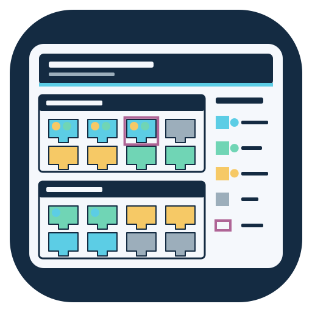

Network tools
Switchport Diagram Builder
Create A4 port diagrams and client reports from a switch configuration.
No configuration loaded
Or drop a configuration file anywhere in this window.Default output folder
Models, names, serial numbers and other details
Reports are saved in a folder named after the switch hostname or model.